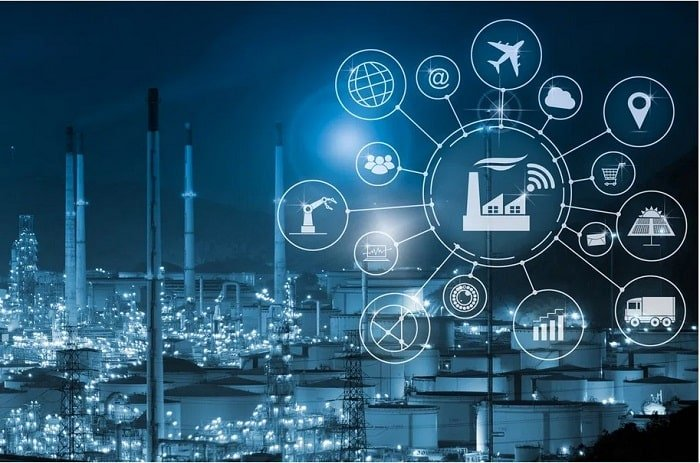
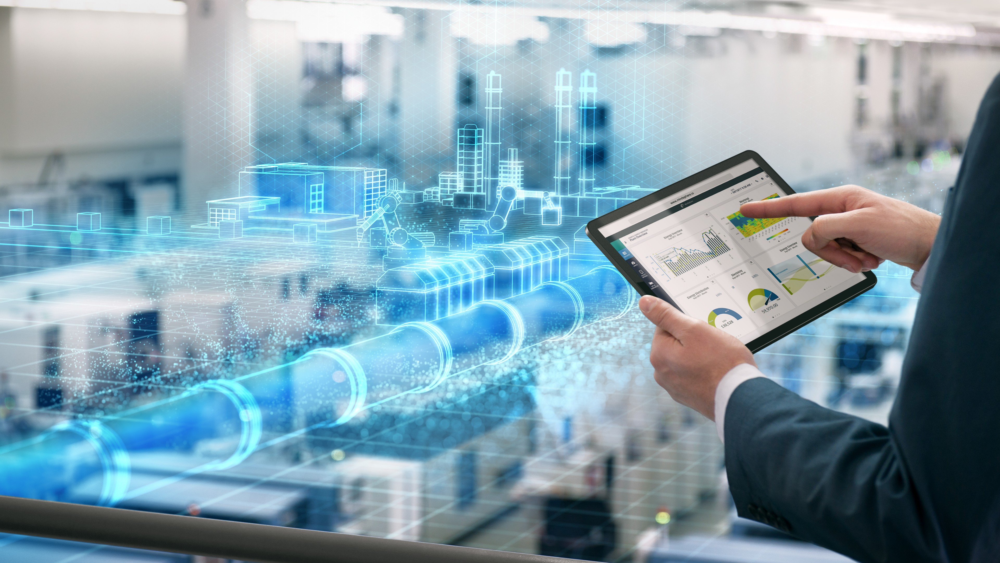
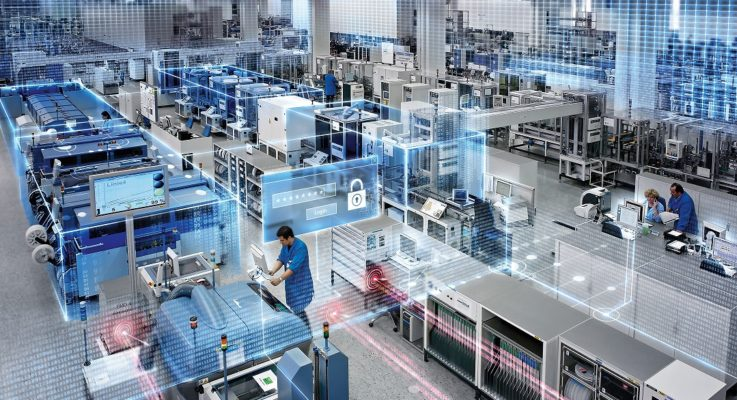
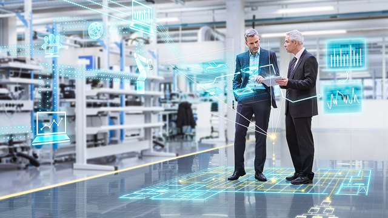
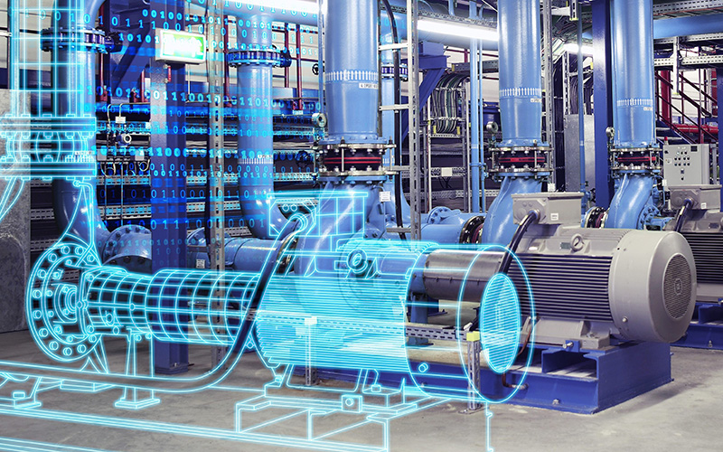

Let’s talk a bit about the future trends in industrial automation technology shall we? But before that, I think it’s important that we first explain what industrial automation is, and what it’s all about.
What is Industrial Automation?
Click here to read the full article about "The Basics of Industrial Automation".Industrial automation is a set of technologies that uses control systems and devices that includes software and hardware such as: computer software and robotics to enable automatic operation of industrial processes and machinery. It generally encompasses: Information processing, measurement, manipulation and control of industrial processes according to an expected aim in machine equipment or production process without direct manual intervention. That is, requiring minimal human intervention.
What are the Various Industrial Automation Components?
The components that make up the industrial automation system include, but are not limited to:
- PLCs (Programmable Logic Controllers) : This is a rugged industrial computer, designed for the control of manufacturing processes. They can act as standalone units that continuously monitors and automates processes. They can also be networked to control an entire plant. It could be of a compact or a modular design, consisting of three (3) major parts:
i. Power Supply Units
ii. CPU or Processor
iii. Input and Output Modules.
It operates by continuously monitoring the inputs, and updating the outputs as a result of some set logic instructions or program. - HMI (Human Machine Interface) : A software application which is usually accessed through some form of touch display that enables interaction and communication between a human operator and a machine or production system. It is often call operator-machine- interface (OMI). It translates complex machine data into accessible information, enabling better control of the production process and its various applications.
- SCADA (Supervisory Control and Data Acquisition) : SCADA systems control and monitor industrial processes. The system acquires and processes real time data, with direct interaction with devices such as sensors and controllers and records event into a log file.
This data is often important for data analysis and it enables effective decision making for process optimization in industrial processes. The functions of SCADA systems includes:
i. Data Acquisition
ii. Data Communication
iii. Information and Data Presentation
iv. Monitoring and Control
- Robotics : Robots help to efficiently perform tasks in complicated or dangerous situations, improve production flow and quality and Increase employee safety.
- DCS (Distributed Control Systems) : Just like the PLC, the DCS is also an industrial controller. But it differs from the PLC in that it is used in a more geographically spread out plant. It has remote I/O modules that can be spread in different locations and often has its own HMI built in.
Benefits of Industrial Automation
The benefits of Industrial Automation include:
I. Saves time.
II. Increase in productivity.
III. Improved reliability and safety.
IV. Reduces or eliminates the possibility of human error.
V. Helps to achieve higher performance and production rate.
VI. Reduces cost through energy savings, material consumption, and labour costs.
Now that we have covered the basics of industrial automation, we can now move into what the future of industrial automation is.
The Future of Industrial Automation
The future of industrial automation (smart automation) is a complete restructuring of production processes; transforming analog and centralized workflow into a digital decentralized, hyper connected production process.
It is an intelligent connected control system that modernizes automation. And its foundation is:
- Digitalization
- Networking
- Integration
Industrial automation in the era of Intelligence, transforms centralized control into decentralized enhanced control. And this can only be achieved through a seamless integration of Information Technology (I.T) systems, with Operations Technology (O.T) systems. Networking across manufacturing and industrial automation system, will be the primary foundation factor of future industrial automation.
Features of the Future Industrial Automation system
-
Industrial Internet of Things (IIoT)

The Industrial Internet of Things (IIoT).
-
Advanced Analytics
-
Artificial Intelligence and Machine Learning:
-
Mobile Technology and Virtualization

Virtualization and Mobile devices .
-
Augmented and Virtual Reality (AR/VR)
-
Unified Architecture:

Unified Digital Plant floor.
-
Vertical and Horizontal Integration

Top floor - shop floor integration.
communication between machine to machine (M2M), people to people (P2P), people to machines (P2M), through the use of smart networked sensors, will play a vital part in the future of automation. This would enable machines communicate with each other and will better improve the interactions between operators and machines. Shared data can be used to provide a feedback system that improves processes.
 Advanced Industrial Analytics .
Advanced Industrial Analytics .
Information they say, is power. In the future of industrial automation, massive amounts of valuable data will be generated for acquisition, processing and analysis. The future automation will require advanced analytic solutions that mine both structured and unstructured data, gaining insights and pulling intelligence out of production system data.
One of the greatest strengths we could have on any production floor is improved situational awareness. And advanced analytics, is one way to attain this.
Advanced analytics goes beyond simple data analysis. It involves four (4) major categories:
i. Descriptive Analytics: where we try to understand from given data, what has happened (simple data analysis falls into this category).
ii. Diagnostic Analytics: where we try to understand why an occurrence happened. Here we apply concepts like root-cause-analysis.
iii. Predictive Analytics: here we try to understand what could happen next. We apply the power in machine learning - more on this in the next section , to try and predict future occurrence.
iv. Prescriptive Analytics: here we try to understand how we can attain a desired state, by taking specific actions.
 Machine Learning .
Machine Learning .
A.I is the ability to give computers and devices cognitive abilities. That is, giving computers the ability to do things that would normally require human intelligence. Machine learning on the other hand, is a branch of A.I that seeks to “learn” from good quality data, patterns and trends in the data to enable it make predictions without explicitly being programmed to do so.
With this incorporated into industrial automation systems, data received from sensors and controllers could be harnessed and could be used to make equipment and machines more intelligent through self-diagnosis, self-correction and predictive capabilities. This can better prevent system down-time and improve asset management.
Machine learning also promises solutions such as: preventive maintenance, automated quality check and anomaly detection.
 Artificial Intelligence (AI).
Artificial Intelligence (AI).
i. Mobile Technology: This will make process management and automation in the future more flexible. With the access to production and process data on-the-go
through tablets and or mobile devices, operators and factory managers can communicate with production systems and running operations on the move anytime and anywhere.
ii. Virtualization: Digital twin technology will be of great use in the future of industrial automation. This is a process of having a digital replica of the entire plant or production floor with the help of advanced modelling systems. This helps in improved design and optimization of industrial control systems. Entire production lines can be virtualized from start to finish, top to bottom.
Allowing management and machine operators to make smart decisions that yield higher quality outputs.

Digital Twin Technology
 Augmented Reality .
Augmented Reality .
Augmented reality (AR) is a technology that gives us the ability to superimpose computer generated images into our physical reality. This can and will act as the future of HMI. With technologies like smart wearable devices, operators can carry their HMI everywhere they go. Which is a step higher than the mobile HMIs. With this, real-time data can be converted into a graphical process representation and operators can literally see what is going on with their own eyes.
Virtual reality (VR) is a technology that gives us the ability to be immersed into a full computer generated reality. This could come in handy for advanced process simulation and training of technical operators, which can save a lot of costs that would have been incurred for training technical operators with real life equipment.
 An operator using VR and AR Technology
An operator using VR and AR Technology
The future of Industrial Automation would require interoperability between machines and devices irrespective of the OEM that manufactured it. These devices would need to collaborate, communicate and share data in order to work efficiently together. For optimal operations, it would be necessary to seamlessly integrate various equipment from various OEMs into a coordinated integrated system. So a unified control and communication platform and standard (like the OPC UA) will be a great requirement in the industrial automation of the future.
Horizontal Integration: In the automation technology of the future, the control, sensing and low voltage distribution systems like those in Level 1 and level 2 of the automation hierarchy, will be deeply integrated to form a unified platform for automation. Providing scalable equipment control in a single programming environment.
Open control platforms ensures easy integration with various equipment from various OEMs.
Vertical Integration: The future of automation would require a vertical integration of the automation system. Where lower level field devices, control layer devices and upper enterprise management systems are all integrated. It will become imperative to combine all
the data from the plant operating system with the information from business applications to create improved operational intelligence.
We are gradually headed to the fourth industrial era: the era of smart, connected cyber-physical systems where we adopt techniques like decentralized control and hyper-connected devices. Powered by technologies such as:
- Internet of things
- Big data and advanced analytics
- Artificial Intelligence and Machine Learning
- Additive Manufacturing/ 3D printing
- Augmented and Virtual reality
- Autonomous robots
- Advanced simulations
All these will provide a smarter, faster, and more productive fourth generation of manufacturing and production automation where improved productivity, efficiency, safety and connectivity will be the prime benefits.
Requirements for the Future Industrial Automation System
a. Architectural Requirements:
The future automation system would require:
- Modularity.
- Interoperability.
- Decentralization of control.
- Virtualization.
- Advanced safety systems.
b. Personnel Requirements:
The future of automation would require high technical and cross-disciplinary skills, with a few being: digital literacy, cross-engineering discipline knowledge, artificial intelligence and data analysis skills, data security and management skills.
Some of the technical roles required aside the regular machine operators are:
- System Integrators: These are the people responsible for putting together the entire systems e.g. control panels, PLC/DCS systems, field connectivity solutions. They design, build and manage technological solutions to meet desired plant needs. They also evaluate and recommend integration solutions and provide post installations and integrations support such as: troubleshooting, updating and general maintenance of the various systems.
- Design Engineers: These ones put together the system configurations based on application requirements. They research, study and develop ideas for new products, and modify existing products and processes to increase efficiency and improve performance. They also develop required infrastructure such as Enterprise applications and secure networks to optimize data flow.
- Maintenance Engineers: After every system have been put together, these ones would always respond to, and ensure the equipment is running smoothly by: cleaning, replacing and installing required machine and equipment parts. Also they would be referred to as reliability centered engineers who ensure the reliability of every plant asset.
In summary, knowledge of system integration, design and networking will be of high importance in the industrial automation of the future.
Benefits of the Future Industrial Automation Technology
The benefits of the smarter industrial automation systems include:
i. Improved productivity.
ii. Improved quality of yields.
iii. Shortened production life-cycle.
iv. Enhanced customization for a more flexible manufacturing.
v. Access to data across production floor and supply chain for better and informed decision making.